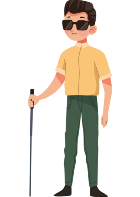

My Projects


I am a Data Science professional with a solid foundation in computer science, holding a Bachelor's degree in Computer Science and Engineering and currently pursuing a Master's in Data Science at Indiana University Bloomington. My technical skill set includes proficiency in languages like Python, Java, R, and a deep understanding of machine learning, data analysis, and software development. I have spearheaded projects such as developing a Python-based tool for energy market analysis and creating innovative solutions like a blind assistance system using the YOLOv4 algorithm and a voice-controlled home automation system. My internship at TIH IoT Chanakya, IIT Bombay, allowed me to contribute significantly to enhancing the responsiveness of a speech and mind-controlled wheelchair, showcasing my commitment to using technology to improve lives. My goal is to continue leveraging my expertise in data science and technology to develop solutions that drive meaningful decisions and innovations in a dynamic organization.
Download Resume
During my tenure as an intern at TIH IoT Chanakya, IIT Bombay, I was deeply engaged in the cutting-edge development of control systems that significantly enhance accessibility and mobility for individuals with disabilities. My primary focus was on the innovative integration of speech and mind-controlled systems into wheelchair technology, a project that not only stretched my technical skills but also instilled a profound appreciation for the intersection of technology and human-centric design. My responsibilities encompassed the end-to-end development of a sophisticated speech control system. This involved the intricate use of Arduino Uno microcontrollers and HC05 Bluetooth modules to translate user commands into actionable digital signals. The project was a testament to my ability to work with complex hardware and software interfaces, ensuring seamless communication between the user's input and the wheelchair's responsive movements. Furthermore, I contributed to the development of a mind-controlled wheelchair system, a groundbreaking approach that offered an alternative, hands-free mobility solution. This aspect of my role required a keen understanding of user experience, adaptive technology, and the creative application of L293D motor drivers to translate cognitive commands into precise movements. Throughout my internship, I was not just a developer but also a collaborator, working closely with a team of skilled professionals. Our goal was to create a wheelchair that was not only technologically advanced but also intuitive and adaptable to the varied needs of its users. The project underscored the importance of integrating multiple control techniques—joystick, voice, and mind—into the wheelchair, ensuring that it could cater to a wide range of user preferences and abilities. This experience was incredibly enriching, allowing me to apply my technical knowledge in real-world applications that have the potential to significantly improve the quality of life for many individuals. It honed my skills in programming, hardware integration, and problem-solving, all while fostering a deep sense of social responsibility and the potential for technology to drive positive change.
Developed by Midhun 2024